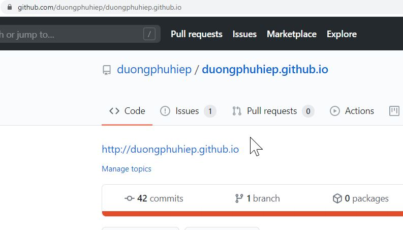
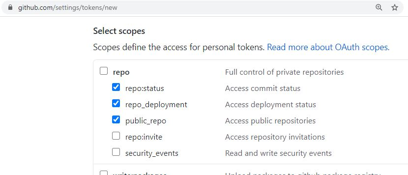
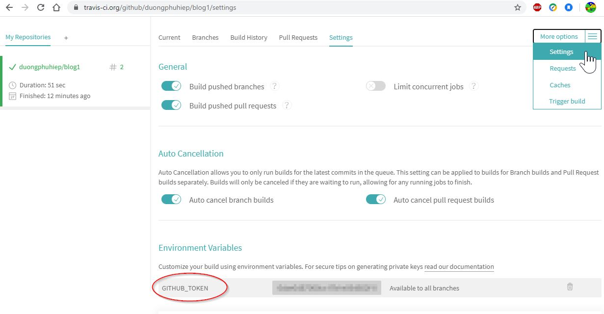

None of the FREE blogging platforms fit my taste! As a fullstack developper it was a shame if I can’t built my own website..
Requirements for my Blog
- No-cost (otherwise it is a shame for me!)
- Easy-to-read interface.
- peoples with slight vision imperfections (eg. Color Vision Deficiency) should be able to read my blog wihout much effort.
- Manage content (CRUD) should not complicate.
- I usually write text and codes snippets then Markdown is a no-brainer.
- Super complex and Rich contents usually go to my Goolge Slides => Ease to embeded the Goolge Slides in markdown contents is a requirement.
- Comments capability: Reader would be able to comment to my blog posts
Other nice-to-have functionalities
- Search
- “like” button (or “clap” button)
- a beautiful interface without the sacrifice of the “Easy-to-read interface” requirement
- “No” for weak-constrat themes (for eg. “gray text” on a “light gray background”)
- “No” for text blend on a image background
- “No” for uses of multi-layer with transparent color
- All the content should have backup (or revision history)
codepen.io - An effortless solution
codepen.io offers a free blog solution sastifying most of my requirements. Although, there are some limitations:
- If you want to embed image in your post you must to upload it somewhere else.
- Tips: I usually Copy/Paste my image to a github issues editor => github will then generate an URL to the images, then I can use the URL anywhere.
- You cannot embed Youtube or Google Slides
- You cannot get rid of the codepen menu and the small sponsor.. (though it is not really relevant or hinder the reader in anyway).
Despite these minor limitations, I recommend codepen.io to all developers with similar requirements (If you don’t want to get the hand dirty)
Build my own blog
The best suitable tools for A markdown-centric CMS is a Static Sites Generator (SSG) on a Jamstack.
The idea is that.
- you design the look (the theme) of your website with a HTML-template language + CSS (or SCSS) + basic Javascript (jquery).
- you write contents (blog’s posts) in markdown.
- then the SSG will combine these two to generate a static website (a bunch of static HTML/CSS/Javascript)
- then any jamstack web server can host this static website (no need PHP, no need nodejs, no need python.. on the hosting server)
In my case:
- My blog codes sources contains
- The theme (or template)
- The content in markdown format
- then Hugo generates the Static website.
- finally travis deploy the Static website on my github page.
There is so many Static Sites Generator today. I don’t wanna get trouble for a small personal blog.. so I picked Hugo - the (likely) most mature and popular Static Sites Generator with a huge community backup…
If you are a Web (or full-stack) developer then the learning step shouldn’t be too much of a problem.
- I recommend you to watch this series first
- Then try to look for a nice theme as a base and tweak it to your taste.
- Dive in the documentation only to search for thing you need to know in detail.
Deployment
Each time I push something to my Blog codes sources (eg. make changes in contents or theme), then it will be automaticly re-built and re-deploy to my github page
Here how I used travis to make this magic happened.
- Step 1: Create the repo on github the repo name must to be
YOUR_GITHUB_LOGIN.github.io

- Step 2: Create a Access Token. Give the access token the permissions to Read / Write your public repositories.

- Step 3: Give the Access Token to travis

Comment capability
Instead of paid solutions such as muut, disqus.., I used utteranc.es… You must to have a github account in order to comment on my blog. Most of my reader would be developers anyway. A developers without a github account shouldn’t spam my blog so utteranc.es is the best fits in my case.
Hidden screens
There is some hidden “screen” in my blog. They are called “taxonomies”
I didn’t expose them because they are not really useful.